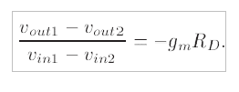
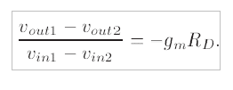

The elegant concept of “differential” signals and amplifiers was invented in the 1940s and first utilized in vacuum-tube circuits. Since then, differential circuits have found increasingly wider usage in microelectronics and serve as a robust, high-performance design paradigm in many of today’s systems. This introduction describes bipolar and MOS differential amplifiers and formulates their large-signal and small-signal properties.

The small-signal analysis of the MOS differential pair proceeds with the he definition of “small” signals in this case


Now, the differential inputs and outputs are linearly proportional, and the circuit operates linearly.

With node P acting as a virtual ground, the concept of half circuit applies
 


Objective: This experiment presents the charcterization of Differential amplifier in terms of voltage swing variation from transfer charcterstics(part a) and frequency response charcaterstics from (part b).

Kindly click here to start experiment EXPERIMENT

The procedure for doing the experiments is as follows:
Step 1: Draw the schematic of the circuit topology with default values of different parameters. Please select the component and then drag and drop.
 Step 2: Please go through the introduction and theory, understand the basic motivation behind the topology.
Step 2: Please go through the introduction and theory, understand the basic motivation behind the topology.
Step 3: Fix your specifications and do hand calculations based on the design equations given for the circuit.
Step 4: Change the default values on the schematic based on the design calculations carried out in Step. 3.
Step 5: Press the simulation button and see the graph in a separate tab.Vary different design parameters and understand the variations in bandwidth, gain, signal swing etc.
Step 6: Varify your results to match with the target sepcifications of Step. 3.

- Behzad Razavi, Design of Analog CMOS Integrated Circuits, McGraw-Hill Higher Education.
- P. Gray, P. Hurst, S. Lewis, R. Meyer, "Analysis and Design of Analog Integrated Circuits," 5th Edition,WILEY, 2009.
- P. Allen, D. Holberg, "CMOS Analog Circuit Design, Second Edition," Oxford, 2002.
- D. Johns, K. Martin, "Analog Integrated Circuit Design," Wiley, 1997.
- Sedra, Smith, "Microelectronics Circuits," 5th Edition, Oxford